Introduction
Attribution & Original Source
This guide is an interactive adaptation of the Microsoft Power Platform Governance Whitepaper, authored and maintained by Joe Unwin, Katie Liu, and Marek Lutz. All core content, frameworks, and recommendations are theirs. Full credit belongs to the original authors. The official PDF is available at:
https://aka.ms/PowerPlatformAdministrationandGovernance
Microsoft Power Platform is a productivity application development platform that delivers innovative business solutions across one integrated platform. Power Apps, Power Automate, Power Pages, Microsoft Copilot Studio, Dataverse and Connectors allow organizations to more quickly and easily build custom apps, workflows, websites, and agents driven by generative AI. Power BI allows any business to analyze and visualize real-time business performance.
Microsoft uses the platform to build their own first-party applications — Dynamics 365 Sales, Service, Field Service and more. These applications are built natively on the Power Platform. Enterprise customers can also build custom line of business applications using this same technology. Additionally, individual users and teams within your organization can build personal or team productivity applications with no or low code.
This whitepaper is targeted towards people responsible for planning, securing, deploying, and supporting environments and applications built on the Power Platform.
📌 Purpose
This whitepaper is designed for those responsible for administering and governing Power Platform environments at scale. It provides practical guidance on gaining visibility into the platform, structuring environments intentionally, and embedding governance into the full lifecycle of apps, flows, and agents.
The document covers the core concepts, capabilities, and decisions required to operate Power Platform securely and efficiently, with an emphasis on managed platform features, proactive planning, and consistent day-to-day operations that support enterprise adoption.
🔍 Scope
Unless specifically noted, all features mentioned in this whitepaper are available as of April 2026.
Out of scope:
- Power BI and other parts of the broader Power Platform
- Power Apps fundamentals for building applications
- ISV deployment scenarios, which are handled differently from enterprise deployment scenarios
- Performance tuning of applications
- Full deployment and management of first-party Dynamics 365 applications
- While many of the concepts presented in this paper apply to Dynamics 365 Finance, Dynamics 365 Supply Chain Management, and Dynamics 365 Retail, they are not directly covered
- Third party solutions which integrate with Power Apps
Please visit https://docs.microsoft.com/en-us/power-platform/ to learn more about these topics.
✨ What's New
Since this whitepaper was last published in 2024, the Power Platform has undergone major changes that include a variety of new offerings that organizations will want to take advantage of in administering their platform. This version of the whitepaper has major additions and modifications in the following key areas:
Zoned Governance Model
Shifted from loosely structured environment management toward a clear, enforced zoned model built on Environment Groups, rules, and automated routing. The new approach emphasizes predictability and standardization rather than guidance alone. Zones have evolved into operational entities rather than conceptual maturity levels, with each zone defined by specific connector access, data boundaries, sharing constraints, and lifecycle expectations enforced through environment-group rules rather than manual configuration.
Maker Routing
Governance now begins the moment a maker first interacts with the platform, with routing automatically placing them into the correct environment based on identity and role, helping apply governance controls early in the agent creation lifecycle.
Managed Platform
A unified, standardized set of capabilities that strengthen governance, simplify operations, and provide visibility across the tenant. The managed platform shifts administration from manual oversight to an integrated platform experience where discovery, configuration, deployment, and monitoring all occurs in one place. It ensures that every environment, asset, and agent operates within consistent boundaries and that governance is embedded directly into the operational fabric rather than applied after the fact. It creates a predictable lifecycle for agents by providing clear ownership, visibility, and guardrails from the moment an agent is created through to its deployment and ongoing use.
Inventory
A single, tenant-wide view of all apps, flows, agents, connectors, and environments, giving administrators complete visibility into what exists, where it sits, and who owns it. This consolidates what used to require multiple tools and manual discovery into a single governance experience.
Advanced Connector Governance
Centrally define which connectors are allowed or blocked and enforce these decisions consistently across zones. This replaces fragmented decision-making with predictable, rule-driven connector behavior aligned to security and compliance expectations.
Simplified Deployment
Standardized pipelines and solution-based ALM give teams a repeatable way to package, validate, and promote agents between zones safely and predictably. Approvals, configuration consistency, and environment-specific policies are automatically woven into the deployment process, ensuring that promotion from personal to team to enterprise spaces happens safely and predictably.
Onboarding Experiences
Welcome content and guided environment messaging now appear as part of the maker experience, helping creators understand rules, responsibilities, and boundaries before they begin building, which reinforces governance at the earliest possible stage.
Usage Insights & Analytics
Surfacing visibility into adoption, performance, consumption, and operational health. Administrators and business owners can quickly identify high-value agents, detect drift or anomalies, and track which parts of the organization are benefiting most. Integrated monitoring and reporting complement this by consolidating health signals, dependency issues, performance trends, and operational risks into a unified view that spans every environment and zone.
Overview
Power Platform is a product family that delivers innovative business solutions across one seamlessly integrated platform. Power BI, Power Apps, Power Automate, Power Pages and Microsoft Copilot Studio allow any business to analyze and visualize real-time business performance, quickly and easily build custom apps, automate workflows, deliver business websites, create agents and integrate AI capabilities.
Power Platform supplies a low code interface for any user to quickly create custom apps while simultaneously providing robust tools for pro developers. This makes it possible to develop integrated and innovative solutions across Azure, Microsoft 365, Dynamics 365, and standalone applications. For enterprises, the platform serves as a core “agility layer” that allows organizations to quickly build new applications and experiences while leveraging the data and services provided by core business systems like SAP or Salesforce. At the intersection of these products lies digital transformation — giving the customer the power to innovate anywhere, while enabling organizations to realize value across teams and departments.
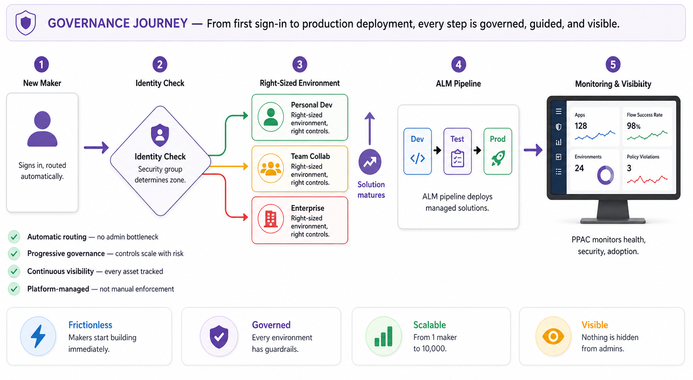
🤔 Why Do Organizations Use the Power Platform?
The Power Platform supplies a level of capability, security and supportability that allows organizations to quickly build, test and deploy applications and solutions, leveraging their existing data and systems. In this way, it provides a layer of capability that is agile, adaptable, and cost effective for developing and testing new ideas and services for an organization. The Power Platform functions as an “agility layer” that allows organizations to quickly build apps and deliver them out to their intended audience.
Ease of Use
One of the key features of the Power Platform is its ease of use. The tools are low-code to no-code, meaning that makers do not need to write code to create working solutions. With appropriate governance in place, this means that solutions are produced quickly and in standard, supportable ways. They are likely to have less bugs with the testing tools provided and can be quickly deployed to end-users to test ideas and assumptions.
Enterprise Integration
Built to integrate with enterprise data safely and seamlessly — wherever it is. From building an order tracking app for front line staff that leverages data in SAP, or an employee feedback app that leverages your employees HR file sitting in Workday, the Power Platform is built to integrate with your enterprise data safely and seamlessly.
Shadow IT Solution
Many organizations face the challenge of business units or individual users creating unofficial, often unsanctioned, IT solutions to address their specific needs. This phenomenon, known as shadow IT, can introduce risks related to data security, compliance, and system integration. The Power Platform offers a compelling solution to this challenge. By empowering users to develop their own solutions within a controlled and governed environment through onboarding and playgrounds, organizations can harness the innovation and agility of shadow IT while helping mitigate common risks related to security, compliance, and visibility. This balance between user empowerment and IT governance ensures that innovation can occur anywhere within the organization, enabling organizations to realize value across teams and departments.
Scale Reliably
Classic software development and operation typically involve many highly technical areas resulting in higher cost to operate and higher risk to maintain and update as business changes. By virtue of Power Platform being a standardized, robust, reliable offering, organizations no longer must worry about the undifferentiated heavy lifting of building, deploying, and operating coded applications. Power Platform makes it simple for an individual maker to create and deploy solutions to an audience.
🧩 Platform Components
Dataverse — Secure & Scalable Data Platform
Dataverse is a fundamental component of Power Platform that provides a secure and scalable storage solution for data. Power Platform applications, such as Power Apps, Power Automate, and Power BI, can seamlessly utilize Dataverse to store and manage data, making it a pivotal part of the unified ecosystem for business application development.
- Relational Data Storage: A significant feature of Dataverse is its ability to store data in a relational manner, allowing for complex relationships, hierarchies, and structures that are crucial for complex business applications. The data within Dataverse is stored in tables, which are analogous to tables in other relational databases such as SQL. Each table can contain multiple columns and can have relationships with other tables. Additionally, the platform allows for the definition of business rules and logic at the data layer, ensuring that data operations maintain business-specific constraints and conditions.
- Security Model: Data integrity and protection are vital for business applications. Dataverse facilitates this through its robust security model supporting fine-grained permissions, role-based access control, and field-level security, ensuring that only authorized users can access or modify specific sets of data. Moreover, it is integrated with Entra, which further bolsters its security capabilities by aligning with a widely accepted identity service.
- Extensibility: Dataverse provides a set of APIs that developers can use to interact with data, allowing for the creation of custom applications or integration with other systems. This feature is bolstered by a rich set of connectors that facilitates integration with hundreds of applications and services, ranging from other Microsoft products like Dynamics 365, to SharePoint Online and Azure services, to third-party solutions.
In essence, Dataverse’s core features of relational data storage, security, and extensibility make it an invaluable asset within the Power Platform’s ecosystem.
Power Apps — Rapid Application Development
Power Apps is a pivotal component of the Power Platform, providing a tool for rapid application development tailored for both business users and professional developers. With a focus on creating business applications quickly, Power Apps aims to bridge the gap between IT departments and other business units, reducing the time and complexity traditionally associated with app development.
- Low-Code Development: Users can build fully functional apps with minimal coding, utilizing a user-friendly, drag-and-drop interface. This low-code environment empowers not just professional developers but also business users (often termed as “makers”) to create bespoke applications tailored to their specific needs without waiting for extended development cycles.
- Deep Integration: Power Apps integrates with other components of the Power Platform, especially Dataverse. This integration enables apps to store, retrieve, and interact with data effortlessly, ensuring consistency and reliability in the underlying data. Moreover, Power Apps can connect with a vast array of external data sources, from SharePoint Online and SQL Server to various third-party services, thanks to the myriad connectors available within the Power Platform ecosystem.
- Mobile-First: Power Apps is built with mobility in mind. In an era where business operations are increasingly shifting towards mobile platforms, Power Apps allows for the creation of responsive apps that work seamlessly across devices — be it a desktop, tablet, or smartphone. This ensures that business processes can continue uninterrupted regardless of the device or location, promoting flexibility and efficiency.
- Vibe Coding: Copilot-assisted development where you describe what you want and the platform builds it.
In summary, Power Apps stands as a transformation tool in the Power Platform, offering rapid, low-code and vibe coding application development that integrates with diverse data sources while ensuring mobility and responsiveness.
Power Automate — Workflow Automation
Power Automate is a service designed to automate workflows and tasks across a multitude of applications and services. Its primary objective is to facilitate automation in business processes, enhancing efficiency and ensuring that repetitive tasks are handled automatically, reducing the manual overhead and potential for human error.
- Pre-built Connectors: A core feature of Power Automate is its vast collection of pre-built connectors. These connectors allow users to establish automated workflows between different services, be it within Microsoft’s ecosystem — like SharePoint, Dynamics 365, and Microsoft 365 — or third-party applications such as Twitter, Dropbox, and Google Workspace. This extensive range of connectors ensures that Power Automate can be a central hub for automating workflows, irrespective of the disparate technologies a business might be using.
- Simple to Complex: For straightforward tasks, users can leverage templates, which are predefined workflows tailored for common use cases. For instance, a user can quickly set up a flow that saves email attachments from Outlook to OneDrive. However, for more intricate workflows, Power Automate provides advanced logic capabilities, like conditions, loops, and switches, enabling the crafting of nuanced automations tailored to specific business needs.
- Security & Compliance: Given the potential sensitivity of data being processed and transferred across services, Power Automate emphasizes secure and compliant data handling. It integrates seamlessly with Microsoft’s security infrastructure, ensuring that data remains protected throughout its journey. Moreover, the platform provides detailed audit logs, allowing administrators to monitor and review all automation activities.
Power Pages — External Business Websites
Power Pages provides organizations with a way to build externally facing business websites. Power Pages websites are highly secure and ready to scale with any enterprise. Creating sites through easy-to-use low-code interfaces that will accelerate the design, build, and publishing workflow for both low-code makers and professional developers alike.
- Shared Dataverse Data: Power Pages, like other products in the Power Platform, can take advantage of shared business data stored in Dataverse. This allows makers to build everything from apps, workflows, intelligent virtual agents, and analytics visualizations that are exposed through Power Pages.
- Enhanced Security: Power Pages provides enhanced security and governance at its core, allowing authors to ensure that business data is secure. Power Pages can take advantage of site authentication with a variety of providers which can, in turn, provide authorization scopes to business data. Power Pages supports modern Transport Layer Security (TLS) standards and is facilitated through the Azure App Service platform. The underlying services align with a variety of compliance accreditations, including International Organization for Standardization (ISO), System and Organization Controls (SOC), and Payment Card Industry Data Security Standard (PCI DSS).
- Global Scale: For organizations servicing international, high-traffic sites, Power Pages can be set up to use content delivery networks, web application firewalls, and edge caching. By using Azure Front Door with Power Pages, organizations can offer global, low-latency business websites, taking advantage of the SaaS (software-as-a-service) platform.
Former Names: Power Pages was formerly known as Power Apps Portals and Dynamics 365 Portals. The portals features previously available on those platforms are now incorporated into Power Pages. Compatible tools include the Power Pages Design Studio, Portals Management App, and the Power Platform Command-Line Interface (CLI).
Microsoft Copilot Studio — Enterprise AI Agent Platform
Microsoft Copilot Studio is the enterprise AI agent platform from Microsoft, designed to help organizations build, connect, and govern intelligent agents across their business. It provides a centralized environment for architecting agents that can act and operate over enterprise data, applications, and workflows, while remaining secure, observable, and compliant at scale.
As organizations enter the enterprise agent era, Microsoft Copilot Studio enables a shift from simple conversational experiences to agents designed to assist with and automate defined business tasks. These agents can support the automation and orchestration of multi-step processes through streamlined workflows that improve velocity, reduce costs, and increase productivity. Microsoft Copilot Studio is built to support this transformation by providing the tooling enterprises need to move from experimentation to production with confidence.
- Natural-Language Development: Copilot Studio offers an intuitive, natural-language-driven development experience that supports a wide spectrum of agent scenarios, from simple task assistance to sophisticated, multi-agent orchestration. Organizations can select from a broad range of models, ground agents in structured and unstructured enterprise knowledge regardless of where it resides, and extend agent capabilities using built-in tools, connectors, and automation flows.
- Governance & Security: A defining strength of Copilot Studio is its governance and security capabilities designed for enterprise environments. The platform provides visibility and administrative controls across key stages of the agent lifecycle, including access management, data protection, capabilities that support compliance requirements and policy enforcement, and risk mitigation enabled by the Power Platform admin center (PPAC). Centralized controls help organizations manage and reduce the risk of uncontrolled agent sprawl, ensure sensitive data is handled appropriately, and confidently scale agent deployments across teams and departments.
- Measurability: Measurement and reporting capabilities enable organizations to track usage, adoption, and impact, supporting continuous optimization and clear ROI justification.
- Broad Ecosystem Connectivity: By combining powerful agent orchestration, broad ecosystem connectivity, and robust governance, Microsoft Copilot Studio enables organizations to unlock the full potential of AI agents, transforming how work gets done while staying firmly in control.
Connectors — Data Bridges
Connectors function as bridges between different services, enabling data to flow seamlessly across a diverse range of applications, databases, and other services. Whether you are looking to integrate data from cloud-based solutions, on-premises systems, or third-party platforms, connectors ensure that the Power Platform remains flexible and extensive in its data integration capabilities.
- Pre-built: Microsoft offers hundreds of ready-made connectors for the Power Platform, catering to popular services such as SharePoint, Dynamics 365, Azure SQL, Salesforce, Google Workspace, and many more. These connectors drastically simplify the process of data integration, allowing users to establish connections between the Power Platform and external systems with just a few clicks, without needing to dive deep into API intricacies.
- Custom Connectors: Power Platform provides the capability to create custom connectors. Recognizing that businesses may have unique or niche systems not covered by pre-built connectors, the platform provides tools for users to design their own connectors. This ensures that even proprietary or less common systems can integrate with the Power Platform, offering businesses unparalleled flexibility.
- Robust: Connectors are not just simple data pipes but come with capabilities to handle authentication, error handling, and even data transformation in some cases. This ensures that data integration is not just possible, but efficient and reliable, reducing potential friction points when bridging multiple systems.
Connectors are the unsung heroes of the Power Platform, ensuring that data and actions can move effortlessly between a vast array of services. They encapsulate the platform’s philosophy of accessibility, flexibility, and integration, providing users with tools to make the most of their data, irrespective of where it exists.
⚙ Managed Environments
Managed environments provide native capabilities for inventory, usage insight, controlled sharing, advanced connector governance, and standardized deployment and lifecycle management. By making governance and operations part of the platform experience — not an external process — managed environments enable organizations to scale confidently while keeping risk and complexity in check.
Enabling a Managed Environment is a simple admin action — for example, in the admin experience you can navigate to environments and use the Managed Environment toggle. It unlocks controls that reduce deployment risk such as consistent policy application across environments and stronger governance posture.
📚 Learn more about Managed Environments
🔌 Managed Environment Feature Overview
A Managed Environment unlocks the following premium capabilities. Each feature is summarized below with a link to the official documentation.
🤖 AI Features of the Power Platform
The Power Platform can also take advantage of recent advancements in Generative AI and machine learning. With Copilot, organizations can describe what they want their app, flow, or agent to do, in natural language, and Copilot will build it for them. This capability allows makers to be incredibly effective in generating even complex apps quickly and safely.
In addition to Copilot, AI Builder empowers users to integrate artificial intelligence capabilities into their apps and workflows without needing deep AI expertise. Through a user-friendly interface, AI Builder offers pre-built models for common scenarios, like form processing, object detection, and prediction, while also allowing customization based on specific data. This tool democratizes AI, bridging the gap between complex AI processes and everyday business applications, enabling organizations to harness the power of AI-driven insights and automation seamlessly.
Planning
🏛 Understanding Environments
In Power Platform, scaling safely isn’t just about where solutions live — it’s about ensuring every app, flow, and agent is created inside the right boundaries from day one. Just like traditional software development and deployment, the organization, management, and segregation of resources are pivotal to ensuring efficient workflows, security, and scalability. Power Platform addresses this need through the concept of “environments”. These environments act as isolated containers, each hosting its own set of apps, data, and other components, ensuring that the different stages of the application lifecycle, from development to production, can be cleanly separated and managed.
Environments are the security boundary and the unit of management in the Power Platform. By delineating boundaries between different solution instances, environments prevent inadvertent overlaps, reduce the risk of errors, facilitate security management, and improve deployment efficiency. For instance, developers can work in an environment tailored for experimentation, such as their own personal playground environment, without the fear of disrupting live applications. At the same time, administrators can control access, allocate resources, and enforce policies differently for each environment, catering to its specific purpose and the needs of its users.
Each environment is tied to a single geographic location that is configured at the time the environment is created. By leveraging multiple environments in different regions, Power Platform supports multiple geographic deployments out of the box. Within each environment, the customer data for an environment does not leave the geography in which that environment is provisioned.
Environments can be used for individual users or user groups, for intended purposes, for stages in the lifecycle of a solution or app, or for different audiences. Each environment can have different Data Loss Prevention (DLP) policies applied to it, defining which connectors can or cannot be used in combination within the environment. Each environment has at the highest level a set of users that have the environment admin role. These users serve as the administrators of the environment.
Environments are no longer managed one-by-one as independent containers. Instead, organizations increasingly use Managed Environments and centralized governance to apply consistent standards at scale. Managed Environments unlock a suite of capabilities for operating Power Platform across the enterprise with more control, less effort, and better visibility, including environment routing, environment groups, and standardized deployment controls.
To reduce sprawl and enforce governance from the start, environment routing can automatically direct makers away from the shared default environment and into personal developer environments based on organizational rules. When used with environment groups, newly created environments can be automatically added to the appropriate group so that governance rules apply immediately, without manual setup.
Environment groups let tenant administrators cluster Managed Environments into logical zones and publish rules that lock key settings across every environment in the group. This prevents configuration drift and ensures that policies, such as ALM defaults and other governance settings, stay consistent over time, even as new environments are created or moved between zones.
The default environment still exists and is required for certain Microsoft 365-integrated experiences, but it should be treated as a tightly controlled productivity space rather than a landing zone for scalable solutions.
📋 Developing an Environment Strategy
A modern environment strategy focuses on minimizing long-lived solution development in the default environment, and instead using routing, groups, and managed controls to place makers into the right governed zone by design.
As an early step in establishing a well-governed Power Platform, organizations should formally define an environment strategy that reflects both today’s footprint and the intended future state. At a high level, the strategy defines what environments you deploy, which workloads belong where, and how each environment is governed based on its role, business risk, and ALM path, so solutions can move from experimentation to production predictably and safely.
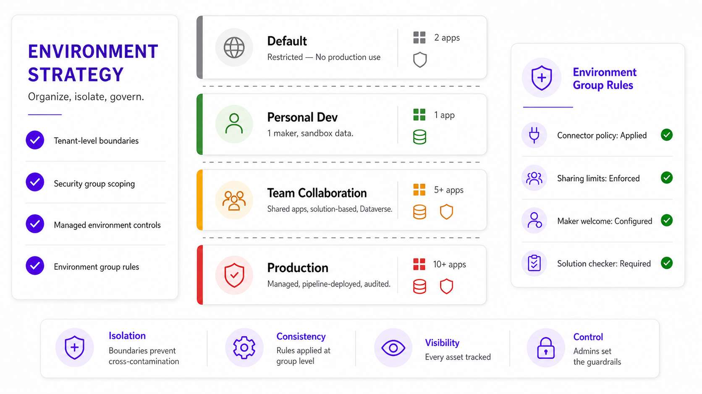
💾 Planning Your Data with Dataverse
Dataverse planning is less about “where data lives” and more about ensuring your data model, naming standards, and storage posture scale as apps, flows, and agents multiply across environments. Each environment that uses Dataverse has its own Dataverse database, and solutions are deployed into that environment boundary.
Governance
Effective governance of the Power Platform requires more than isolated policies or after-the-fact controls. As organizations scale their use of apps, flows, and agents across teams and business units, governance must be structured, enforceable, and embedded into the platform’s operational fabric. Microsoft recommends organizing governance around five core pillars that work together to provide security, consistency, visibility, and scalability across the full lifecycle of Power Platform solutions. These pillars align to how the platform is now administered — through Managed Environments, environment groups, automated routing, and centralized reporting — so that governance is applied by design rather than through manual oversight.
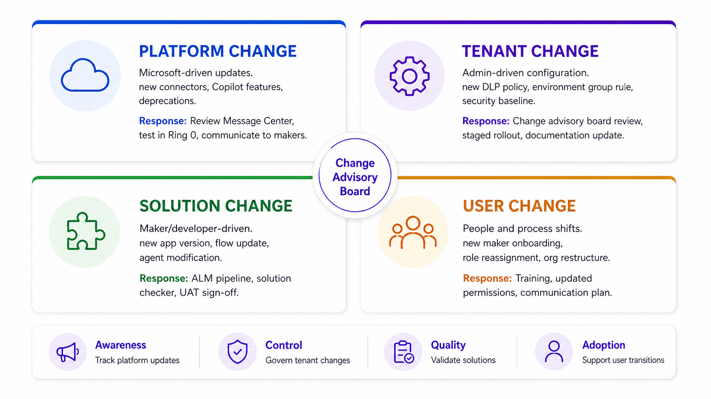
🏛 Governance Fundamentals
To ensure success, it is recommended that fundamental governance principles are established. Conceptually, these principles can be summarized into three pillars that support the governance system:
📜 Policy
There should be a comprehensive strategy outlining the system’s objectives, accompanied by policies to provide high-level structure. For example, the overarching strategy may involve pilot agents to evaluate business benefits. To achieve this, policies may be required for data loss prevention, citizen development, and Application Lifecycle Management (ALM).
⚙ Process
The methodology for implementing this strategy is defined by processes. For instance, there should be a process for regular review and reporting of costs, as well as a process for ALM. Clearly defined issue escalation paths should also be established.
👥 People
Governance is inherently complex, and requires management by individuals who are authorized, capable, and accountable.
No matter how many governance tools are available, true governance only happens when organizations define a clear strategy and actively implement supporting processes. Tools can help automate and enforce, but without strategic intent and disciplined execution, governance remains aspirational rather than operational. This is also why change management is important.
Key insight: At a conceptual level, the pillars of governance can be presented as a pyramid. This pyramid emphasizes the importance of non-system factors in achieving a robust governance system. While no set of tools can replace the need for a clear governance strategy and disciplined processes, the right tools can make it much easier to operationalize and sustain those practices at scale. Within the Microsoft governance ecosystem, these governance pillars are enforced with Environment Groups, Group Rules, and Environment Routing.
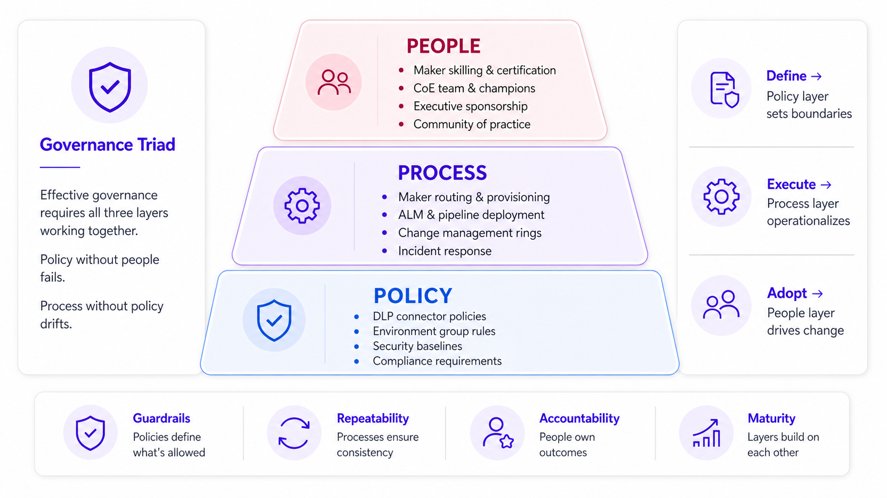
🔒 Security Controls
Security controls define the boundaries within which apps, flows, and agents are allowed to operate. These controls protect organizational data, enforce compliance requirements, and reduce the risk introduced by uncontrolled integration or exposure.
In the Power Platform, security controls span identity and access management, data protection, connector governance, and runtime enforcement. At a foundational level, environments act as the primary security boundary, allowing tenant administrators to isolate workloads, control data residency, and apply tailored policies based on risk and business purpose.
Key security capabilities include:
- Data Loss Prevention (DLP) — policies that govern which connectors can be used together and restrict data movement across trust boundaries
- Connector Access & Advanced Policies — determine which services (including premium or custom connectors) are available in each environment
- Role-based Access & Dataverse Security — control who can build, run, and share apps, flows, and agents, as well as what data they can access
- AI-specific Protections — including model selection, grounding boundaries, and integration with Microsoft Purview for sensitive data detection and compliance reporting
Security controls are most effective when applied consistently at scale. Environment Groups and rules allow organizations to define these security baselines once and enforce them automatically across every environment in a given governance zone, preventing drift and reducing reliance on manual configuration.
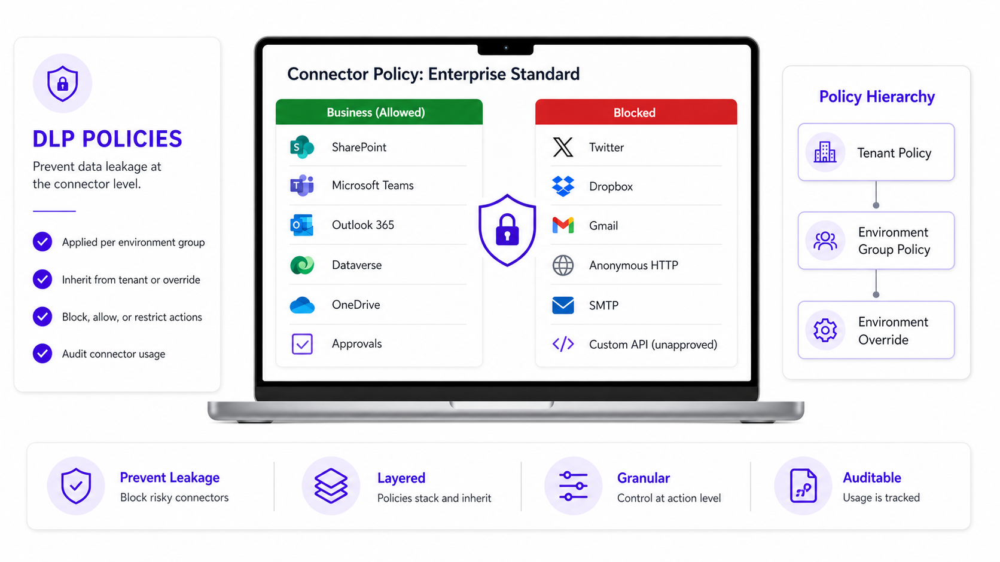
📋 Management Controls
Management controls govern how Power Platform resources are created, operated, promoted, and retired over time. While security controls define what is permitted, management controls define ownership, accountability, and operational discipline.
These controls span the full lifecycle of apps, flows, and agents, including:
- Who is allowed to create environments and solutions
- How environments are configured and administered
- How sharing, publishing, and promotion between environments is handled
- How changes are reviewed, approved, and deployed
Modern Power Platform governance shifts management away from ad-hoc processes toward standardized, rule-driven operations. Managed Environments provide native capabilities for enforcing sharing constraints, onboarding experiences, solution deployment expectations, and environment-level settings that cannot be altered independently.
By combining environment groups, rules, and standardized pipelines, administrators can ensure:
- Consistent configuration across environments serving the same purpose
- Predictable promotion paths from development to production
- Clear separation between personal, team, and enterprise-critical workloads
- Reduced operational overhead by eliminating one-off exceptions
Management controls ensure that growth in apps, flows, and agents does not result in fragmentation, unclear ownership, or unsupported solutions.
📊 Platform Reporting & Visibility
At scale, governance is unsustainable without comprehensive visibility. Platform reporting provides the insight administrators need to understand what exists, how it is used, and where risk or opportunity is emerging across the tenant.
Power Platform reporting is no longer limited to isolated usage metrics. The new reporting architecture delivers unified visibility across apps, flows, connectors, environments, and agents, enabling governance decisions to be based on real operational data rather than assumptions.
This visibility is delivered primarily through four experiences in the Power Platform admin center (PPAC): Inventory, Monitoring, Security, and Copilot, with Microsoft Purview providing cross-tenant data security and compliance reporting.
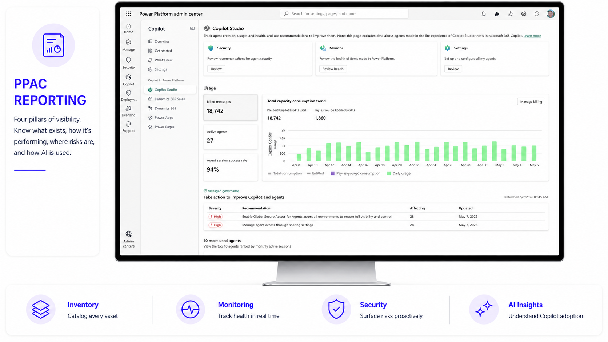
Inventory — Tenant-Wide Discovery
Inventory provides a comprehensive, cross-environment view of all Power Platform assets, including apps, flows, agents, and more. It establishes the authoritative catalog for governance by showing what exists, who owns it, where it lives, and how it is being used. This inventory serves as the starting point for identifying sprawl, unmanaged solutions, and candidates for optimization or retirement.
Monitoring — Health & Operational Insight
The Monitoring experience surfaces health, reliability, and performance signals across Power Platform workloads. It enables administrators to identify failures, degradation trends, and abnormal behavior in apps, flows, and agents before they become business-impacting incidents. Operational monitoring supports proactive governance by shifting administrators away from reactive troubleshooting toward continuous improvement.
Security — Centralized Posture Management
The Security experience consolidates security insights and recommendations across the Power Platform, including data access patterns, connector usage, and configuration risks. It highlights misconfigurations and risky combinations that may increase exposure and provides guidance to remediate issues consistently across environments. By consolidating security signals and recommendations in one place, the Security experience reduces diagnostic overhead for IT teams, making it faster to identify misconfigurations, prioritize risk, and take corrective action across the platform.
Copilot — Adoption & Value Oversight
The Copilot experience consolidates governance, analytics, and business value metrics for Copilot and agent usage across Power Platform. It provides usage, adoption, and value metrics that help organizations understand where AI-driven solutions are delivering impact, where governance controls are being applied, and how usage aligns with business outcomes. For many organizations, this becomes the executive-facing view that ties technical governance to return on investment. However, when Copilot Studio agents are published to Microsoft Teams or Microsoft 365 Copilot, administration and visibility are surfaced through the Microsoft 365 Admin Center (MAC), making MAC the control point for these deployment surfaces.
🛤 Maker Routing & Auto-Provisioning
One of the most important governance shifts in the Power Platform is that governance now begins before a maker creates their first app, flow, or agent.
Environment routing and environment groups ensure that makers are automatically placed into the correct governed space based on identity, role, or group membership. When a user first accesses Power Apps, Power Automate, or Copilot Studio, routing evaluates organizational rules and provisions them into an appropriate environment aligned to governance intent.
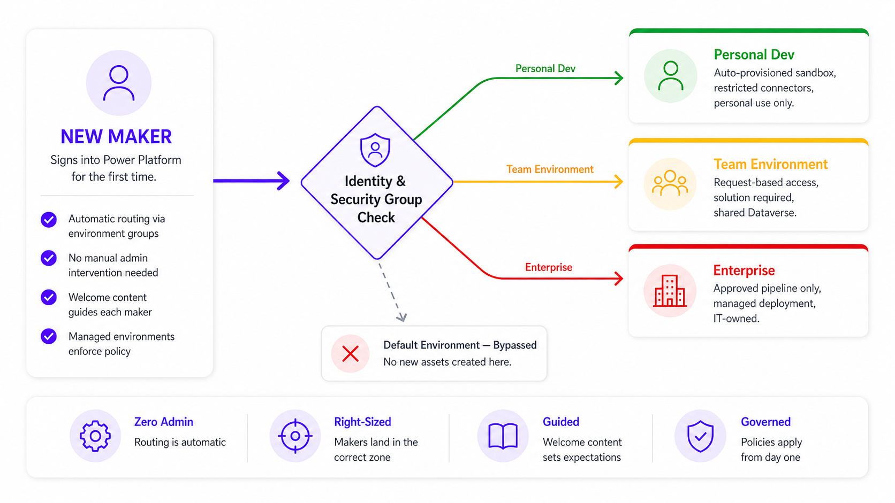
Typical routing patterns include:
- Personal developer environments for individual experimentation and iteration
- Team or departmental environments for shared collaboration
- Enterprise managed environments for high-risk or organization-wide solutions
Routing prevents accidental creation in the Default Environment and ensures that appropriate connector policies, sharing defaults, security baselines, and support expectations are enforced from the moment development begins.
By combining routing with environment group rules, organizations ensure that governance is applied automatically and consistently, reducing shadow IT and simplifying day-to-day administration.
🏗 Governance Zones
Zones represent distinct levels or stages of governance maturity within the Microsoft ecosystem. Each zone is designed to address specific security, management, and operational needs while ensuring a scalable and adaptable framework for apps, workflows and agents. By conceptualizing governance through zones, organizations gain a clearer pathway to evolve their strategies, from foundational controls to advanced, fully integrated solutions.
The zones serve as a structured roadmap for IT practitioners and decision-makers to implement and manage agents effectively, aligning security and operational measures with their organization’s maturity level. Each zone emphasizes key elements such as access management, capabilities that support compliance requirements and policy enforcement, resource optimization, and system integration. Organizations can progress through these zones by enhancing governance practices, expanding security measures, and refining management strategies. This tiered approach ensures adaptability to meet growing organizational demands while maintaining a robust governance structure.
At a practical level, organizations implement zones through Environment Groups in the Power Platform Admin Center (PPAC). Environment rules prevent drift and apply consistently across grouped environments.
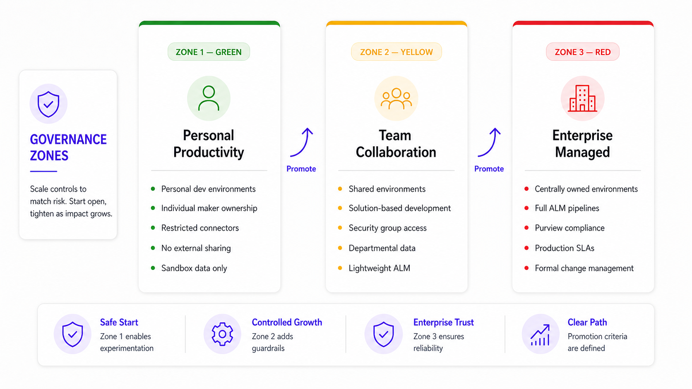
Personal Productivity
Zone 1 represents the entry point for Power Platform governance and is designed to enable safe, individual innovation while maintaining clear security and operational guardrails.
Team Collaboration
Zone 2 builds on Zone 1 and introduces shared, governed collaboration across teams and departments with stronger enforcement and lifecycle discipline.
Enterprise Managed
Zone 3 represents the highest level of governance maturity for business-critical, organization-wide solutions with full enterprise assurance.
Zone Comparison Matrix
| Attribute | Zone 1 (Green) | Zone 2 (Yellow) | Zone 3 (Red) |
|---|---|---|---|
| Purpose | Personal productivity | Team collaboration | Enterprise managed |
| Ownership | Individual maker | Solution-level / team | IT + CoE / platform team |
| Sharing | Limited/disabled | Controlled, within team | Organization-wide |
| Connectors | Restricted, low-risk only | Curated, broader set | Explicitly approved only |
| ALM | Not required | Lightweight solutions | Full ALM + pipelines |
| Environment Type | Personal developer | Team/departmental | Dedicated Dev/Test/Prod |
| Security | Baseline protections | Enhanced, Entra groups | Strict, Purview aligned |
| Monitoring | Inventory only | Inventory + Security + Monitoring | Full PPAC reporting |
| Asset Lifecycle | Short-lived, transitional | Intentional, reusable | Products, not projects |
Zone Example: Organizations implement zones through Environment Groups in PPAC. A typical deployment might include one environment group per zone, with rules that enforce connector policies, sharing limits, ALM requirements, and deployment standards appropriate to each zone’s risk level.
Security
Security in Power Platform is implemented through layered controls that span tenant governance, environment boundaries, connector and data controls, and Dataverse’s authorization model. As adoption scales across apps, flows, and agents, security considerations should be focused on continuously assessing risk, enforcing guardrails at scale, and ensuring access aligns to business intent.
🏢 Security in the Power Platform Admin Center
The Power Platform admin center (PPAC) is the central place to manage security posture, apply baseline protections, and operationalize security recommendations across environments. The Security posture management experience provides a comprehensive view of your security position, includes preconfigured security defaults, and guides administrators through a focused action center for completing required security tasks. It also supports proactive governance by enabling admins to customize security settings at scale to fit business needs.
🔐 Dataverse Security
Dataverse provides a security model designed for enterprise applications and is only in effect when an environment includes a Dataverse database. IT & Administrators are typically responsible for establishing the security model foundations, ensuring users have the correct configuration, and troubleshooting access issues as solutions scale.
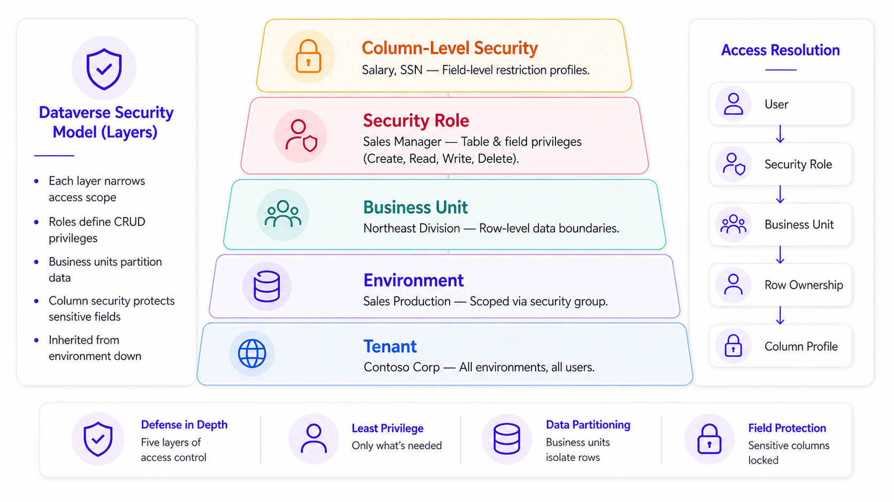
Change Management
Power Platform enables rapid creation of apps, automations, and agents across teams, but that speed also increases the likelihood of inconsistent practices, unmanaged sprawl, and fragile solutions unless change is intentionally managed.
Change management in Power Platform must account for two factors:
- The platform itself brings continuous updates as Microsoft delivers new capabilities, security improvements, and admin experiences through cloud updates.
- Your organization’s assets change continuously as makers and teams iterate on apps, flows, sites, and agents, often daily, based on business needs and user feedback.
A modern change management approach therefore combines not just process and platform controls but people too, so that innovation can move quickly while remaining safe, supportable, and aligned to business risk.
🔄 6.1 What "Change" Means in Power Platform
For most enterprises, Power Platform change management includes the following categories of change:
6.1.1 Platform Change (Microsoft-driven)
These are changes that arrive through service updates, new features, deprecations, admin center experiences, security enhancements, and behavior changes. In Power Platform, some updates can be influenced through environment-level settings such as refresh cadence (for example, choosing how frequently an environment receives updates and features for certain services).
6.1.2 Tenant Change (Admin-driven)
These are changes your admins intentionally make to govern the platform: environment strategy updates, new environment groups and rules, routing changes, connector governance decisions, advanced connector policy updates, onboarding messaging, or standardizing deployment processes. The shift toward managed governance means these decisions are increasingly expressed as rules applied at scale, not one-off configuration.
6.1.3 Solution Change (Maker/Team-driven)
These are changes to the business assets built on the platform: new apps, updated flows, revised agents, connector additions, schema changes, or new integrations. Solution change must be managed through lifecycle practices (solutions, pipelines, approvals, testing, and rollback planning) that match the business criticality of the workload.
6.1.4 User Change (People-driven)
These are user experience changes. Power Platform can move quickly and that speed is a feature, but it also means small changes in behavior (where makers build, what they connect to, how they share, and how they deploy) can create outsized operational and risk impact if the organization is not brought along intentionally. This is especially true as apps, flows, and agents expand beyond experimentation into real business processes.
🎓 6.1.4.1 Skilling is Role-Based
"Users" in Power Platform is not one audience. Your change plan should explicitly skill the groups that introduce and experience change differently:
- Admins / Platform Operators: Manage tenant and environment governance (environment strategy, routing, environment groups/rules, connector governance, monitoring and lifecycle controls)
- Makers (new & occasional): Need safe defaults, clear guardrails, and quick-start guidance so they don’t accidentally create sprawl or fragile solutions
- Advanced Makers / Solution Owners: Move solutions across environments and need lightweight ALM discipline (solutions, pipelines, validation) that matches business risk
- End Users: Consume apps, flows, and agents and need trust, clarity, and feedback loops so adoption is intentional and measurable
Zone Alignment: This aligns directly to the governance zones described earlier: Zone 1 requires skilling focused on safe personal productivity and "graduation" expectations; Zone 2 requires collaboration patterns and solution ownership; Zone 3 requires operational rigor, support readiness, and controlled release practices.
6.1.4.2 Skilling Pattern
A practical way to structure this is to follow a pattern that focuses on a tailored, role-based skilling plan backed by expert-led training and scalable delivery. In practice, that pattern typically looks like:
- Building a tailored organizational skilling plan aligned to roles and business goals
- Delivering live, instructor-led training with real-time Q&A
- Scaling enablement through high-impact webinars (and smaller on-demand content) for broad audiences
6.1.4.3 Anchor Skilling to the "Moments That Matter"
Instead of treating training as a one-time event, design skilling around the points where users make decisions that create risk or operational cost:
- Building: Where should I build? What’s allowed in this environment/zone?
- Connecting: Which connectors/data sources are appropriate? What is restricted by policy?
- Sharing: Who can I share with, and what ownership/support expectations change when I do?
- Promotions: How do I move from dev/test to production safely (solutions, pipelines, validation)?
- Incidents: How do I troubleshoot responsibly and escalate when something fails?
6.1.4.4 Build a Community Within Your Organization Using a 90 Day Plan
Building champions within your organization helps scale up skilling initiatives and helps unblock employees as they become makers and help to become more productive. Because platform, tenant, and solution change are continuous, skilling must be continuous too, refreshed as policies evolve and as solutions mature from personal productivity to shared and enterprise-managed use.
🔗 Visit https://learn.microsoft.com/en-us/microsoft-copilot-studio/guidance/community-framework-overview/ to learn more about making a plan.
📐 6.2 Decision Rights & Change Operating Model
Before implementing tooling, organizations should define who is allowed to introduce which types of change, and what approvals are required. This is most successful when structured as a lightweight operating model rather than an overly centralized bottleneck.
An example of an enterprise model includes:
- Platform Owners (Power Platform admins) — own tenant-level configuration, environment strategy & governance enforcement
- Zone Owners (or environment group owners) — own the standards for a governed zone and manage drift prevention through environment group rules
- Solution Owners — accountable for business outcomes, supportability, and lifecycle decisions for apps, flows, and agents
- A Change Review Cadence (weekly or biweekly) — reviews upcoming platform changes, high-impact solution releases, policy changes, and operational issues
This model should stay risk-based — not every change requires heavy review, but high-impact changes should be visible and handled efficiently.
🎯 6.3 Release Rings
One of the most effective patterns for cloud services is a "release ring" approach: validate change in smaller scopes first, then broaden rollout as confidence increases. Microsoft guidance for cloud change emphasizes making risk-based decisions rather than disabling everything by default — this is the same approach that should be used for Power Platform.
In Power Platform, release rings can align to your environment strategy and zones:
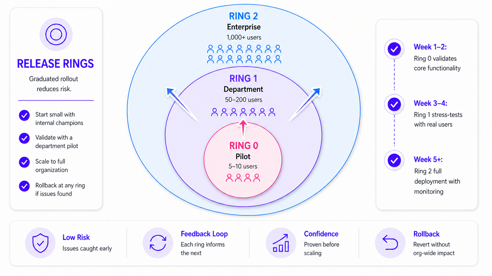
- Ring 0 (Pilot / Platform Team): Validate new features, governance settings, and admin workflows in a controlled internal environment group
- Ring 1 (Advanced Makers / Departmental): Expanded to selected teams and governed collaborative environments where feedback is fast and impact is bounded
- Ring 2 (Enterprise): Roll out broadly to managed environments that host business-critical apps, flows, and agents with standard deployment and monitoring expectations
Where applicable, a refresh cadence can be implemented to be part of your ring strategy, giving you a controlled way to manage how quickly updates are introduced for certain experiences.
Release Rings vs. Governance Zones
| Release Rings (CM) | Zones (Governance) | |
|---|---|---|
| Core purpose | Manage change over time | Manage risk at rest |
| Primary question | "When and to whom do we roll this out?" | "Where is this allowed to run?" |
| Control type | Social and process control | Technical and policy control |
| Success signal | Confidence, readiness, adoption | Compliance, isolation, safety |
⚙ 6.4 Operationalize Change with Managed Platform Controls
The most sustainable way to manage change is to convert change management from a manual process into a platform-enforced process. The following controls achieve this:
📢 6.5 Communication & Enablement
Even the best admin controls fail if makers and teams don’t understand what has changed, why it has changed, and what is expected of them. Successful Power Platform adoption requires both technology and culture — users need an environment where they can thrive with guardrails (Personal Development Environments).
Some example best practices may include:
- Maintain a clear "what’s changing" channel (internal site or Teams channel) that summarizes tenant policy changes, new standards, and rollout timelines
- Publish zone-specific expectations (what makers can build, share, and connect to in each zone) and reinforce them through onboarding experiences and admin communications
- Use training and office hours to reduce friction when introducing new lifecycle requirements (solutions, pipelines, approvals, or connector governance etc)
The goal is that the documentation makes governed behavior easy to understand by having access to documentation describing what’s happening and changing as well as having training to ensure everyone is on the same page.
🤖 6.6 Using Agents to Accelerate Change Management
As organizations adopt AI agents, they can also use agents to support the change management process itself — not as a replacement for governance, but as a way to reduce manual coordination and increase consistency.
What type of agents can help with this?
- An agent that answers "what changed?" using approved governance documentation and internal standards
- An agent that guides makers through release steps (solutions, pipelines, environment variables) and routes exceptions to the right admin queue
- An agent that summarizes tenant recommendations and governance actions surfaced through admin experiences, then turns them into a prioritized change backlog
Key Governance Principle: When using agents for change management, agents should help execute your process, not redefine it. They must operate within the same boundaries you enforce across environments, data, and connectors.
Deployment
Deployment is where change management becomes operational: turning planned, reviewed change into a controlled, repeatable release motion that can scale across teams without introducing unmanaged drift or production risk. A modern deployment approach for Power Platform focuses on repeatability, environment consistency, and traceability, so apps, flows, and agents can move through the lifecycle with the same enterprise guardrails applied.
📋 7.1 Deployment Planning
Deployment depends on decisions made earlier in platform planning. There’s foundational considerations such as environment discovery, single sign-on, security policies, and administrative roles to plan for.
As part of this planning, organizations typically define:
- An environment strategy for adopting Power Platform at scale (including routing and the use of managed environments)
- The environments used across the lifecycle such as dev, test and production, and the types of environments such as developer, trial, sandbox, or production, aligned to intended use and risk tolerance
These decisions create the structure that deployment relies on, so releases consistently land in the right place, under the right policies, with clear operational ownership.
🔄 7.2 ALM Fundamentals
Application lifecycle management (ALM) is a set of practices, tools, and processes that help teams build, test, release, and maintain solutions reliably as they evolve. In Power Platform, ALM is implemented by treating environments and solutions as the core building blocks for controlled change.
Environments serve as containers to store, manage, and share business data, apps, and processes, and they help separate work based on security requirements or target audiences.
A healthy ALM approach also depends on separating "what the solution is" from "how it’s configured" in each environment. Power Platform supports this by using:
- Environment Variables: Store parameter keys and values separately from the sections that use them, which makes it straightforward to keep the solution consistent while changing only what must differ
- Connection References: Handle environment-specific settings (such as tables, connections, keys, endpoints, or site/list parameters) without hard-coding those values directly into apps, flows and agents
This reduces deployment friction, improves consistency across teams, and creates the preconditions for automated promotion patterns through pipelines.
🚀 7.3 Pipelines
Power Platform Pipelines provide a Continuous Integration and Continuous Deployment (CI/CD) mechanism that automates solution deployments across environments, streamlining ALM for makers, admins, and developers. Admins can set up governed deployment pipelines in minutes, makers can deploy solutions with just a few clicks, no manual exports/imports, and pro developers can extend or run pipelines through the Power Platform Command-Line Interface (CLI) for more advanced scenarios.
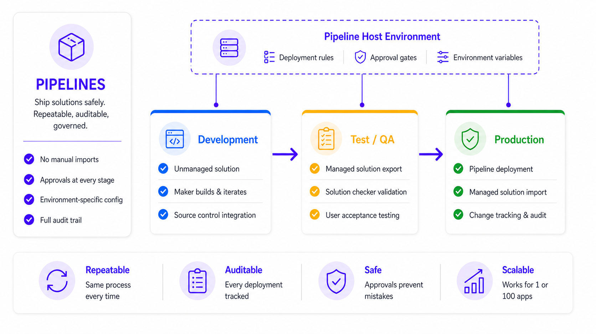
🔧 7.4 Managing Environments for Deployment
A common cause of deployment failures isn’t the solution itself — it’s the configuration around it. The same app, flow, or agent often needs to point to different resources in each environment (different SharePoint sites, endpoints, keys, connections, or databases), especially when going through the dev and test stages.
Power Platform’s ALM model addresses this directly with environment variables and connection references, so teams do not hard-code environment-specific values into components that then break as the solution moves.
- Environment Variables: Store parameter keys and values separately from the sections that use them, which makes it straightforward to keep the solution consistent while changing only what must differ between development, test, and production. Because environment variables are solution components, teams can transport the references (keys) and set the appropriate values as the solution is promoted.
- Connection References: Handle environment-specific connections without hard-coding values directly into apps, flows and agents
- Deployment Settings Files (JSON): Microsoft provides deployment settings files (JSON) so connection references and environment variables can be prepopulated for the target environment, removing the need to enter values interactively after importing a solution and making CI/CD scenarios more reliable.
Managed Environments strengthen this model by making the target environment "release ready." In practice, even if your configuration is perfect, deployments still fail (or create governance gaps) when target environments don’t have consistent guardrails. Managed Environments are designed to activate governance capabilities so admins can apply policies consistently at scale.
Enabling a Managed Environment is a simple admin action (for example, in the admin experience you can navigate to environments and use the Managed Environment toggle), and it unlocks controls that reduce deployment risk such as consistent policy application across environments and stronger governance posture.
This becomes especially important once you introduce pipelines — pipeline target environments must be enabled as Managed Environments when using the custom host approach.
🔗 7.5 Extended Deployment
While native pipelines cover many deployment needs, Power Platform also provides options if you require deeper DevOps integration:
- GitHub Actions: Guidance describes automated workflows that can build, test, package, and deploy Power Platform solutions, including importing/exporting solutions and deploying to downstream environments
- Azure DevOps Build Tools: Positioned for more complex enterprise workflows and integration with broader CI/CD practices
These automation paths can also support activities such as environment provisioning and static analysis as part of an automated lifecycle.
Escalation Path: Teams can adopt service-native deployment patterns first and introduce deeper DevOps automation where engineering standards or complexity may need it.
✅ 7.6 Validation
For deployments, quality is not a one-time activity — it’s a repeatable process that reduces risk every time a solution moves forward, especially when working in enterprise.
In Power Platform, validation typically combines three layers: static quality checks, automated testing where applicable, and human approvals for risk-based releases. A structured testing and validation phase helps teams catch reliability, performance, and security issues early, so they are caught before they become production incidents.
1. Static Analysis (Baseline Quality Gate)
Start with static analysis as the baseline quality gate. Solution Checker performs a comprehensive static analysis of solution objects and produces a report that highlights issues, affected components and guidance on how to resolve each issue. It can be run quickly and consistently and is a great first step.
Managed Environments can also enforce solution checker validations during the solution import, turning quality from a recommendation into an operational control. This approach allows organizations to scale safely — lower-risk environments can start with a warn approach while production can adopt stricter enforcement once teams are ready.
2. Automated Testing
Automation testing allows repetitive integration testing ensuring that when you make changes to your apps, flows and agents, that you’re not having negative consequences in unchanged areas. This is something to consider when implementing your test strategy.
3. Human Approvals
Then finally focus on human approvals, with approval-based deployments which add a governance and compliance checkpoint before production promotion. This is especially important when releases affect business-critical processes, regulated data etc.
4. Agent Evaluations
AI agents can drift over time as models, grounding data, instructions, tools, and context change. Agent evaluations (evals) provide a repeatable, evidence-based way to validate agent behavior beyond a few static manual spot checks, helping teams build confidence before a larger rollout.
In Copilot Studio, evals use test cases (a user question that can be paired with an expected answer) grouped into test sets that can be run repeatedly as the agent evolves.
Creating Test Sets: Teams can create test sets from realistic prompts (including manually authored scenarios, imported datasets, AI-assisted generation, or past conversations).
Scoring with Configurable Graders: Score results using configurable graders (for example, quality/completeness, classification of expected behavior, or whether the agent used the right capability at the right time). This gives you a more realistic test scenario than just static box checking, mimicking what happens in real scenarios.
Production Readiness: Run evals under an explicit user identity context so results reflect the same access boundaries users will experience.
Review Outcomes: Review outcomes at two levels: aggregate trends across the set and case-level explainability to understand why specific tests pass or fail.
Regression Detection: Re-run and compare evaluation results after changes to confirm improvement and catch regressions early.
Important: Agent evaluation complements (but does not replace) other validation controls and should be used together.
Together, these approaches establish a consistent pattern: static analysis, enforcement for critical environments, automated tests where supported, and approvals for risk-based releases.